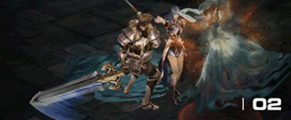

遊戲介紹
遊戲特色
3D經典視角 簡單與高度自由性操作
【戰亂II】以熟悉和簡單的經典視覺，搭配自由度極高的即時操作，搭配極為豐富的遊戲內容、角色養成、大型多人PVP對戰，所帶來的是絕對經典的RPG高度體驗感受!熱血養成！強化增幅！一次滿足各種需求
 【戰亂II】的強化與養成系統做了更加平衡的修正，讓裝備的強化CP值大幅上升。越強力的裝備將增加越多的對應抗性，低階裝備不再是毫無用處，強化心血不會白費。轉職重生 更具特色
【戰亂II】每個職業達到48級時可以開始轉職任務，每個職業都有2個二轉職業可選擇，特色與能力皆不相同，轉職後將更加突顯職業特性與能力，且能使用各種轉職技能，角色定位更加提升。多元成就 滿足蒐集快感
【戰亂II】的遊戲成就分為怪物圖鑑與遊戲成就透過發現怪物，可以隨著狩獵的熟悉度進行了解與壓制，支配的階段發展，增加角色隊指定怪物的攻擊能力效率。
遊戲內各類互動體驗可以獲得成就。舉凡公會、組隊、PVP，甚至死亡的多重成就，部分成就更可獲得稱號或獎勵。
競技副本 多人即時對戰
【戰亂II】遊戲競技非常多元，從競技場到攻城戰，狩獵競賽等等，每天都能體驗不同的PVP競技方式。地下城副本可與其他玩家進行時間競賽，挑戰最強最速通關排名。攻城PK 爭奪榮耀！
攻城戰屬於多人對戰PVP玩法，藉由不同的血盟群聚搶占城堡，考驗著血盟的向心力與領導者的智慧，團結與反應將是左右攻城戰榮耀的關鍵。
變身系統說明
- 當玩家變身為怪物時，可避免一些主動怪物攻擊。
- 部分變身可強化專屬能力。
- 使用變身魔杖可隨機變身，可在PVE競技場、狩獵怪物獲得
- 石頭熊商店可購買古代變身魔仗。
- 變身魔杖時效固定為60分鐘
- 變身卷軸的變身種類可指定，等級越高可變身的種類就越多。
- 點選右鍵使用變身卷軸，會彈出變身目錄選單。
- 使用變身卷軸變身的怪物類型，都會自動記錄在「最近變身目錄」中。
- 變身的怪物等級越高，額外加成屬性的特殊效果也會跟著不同。例：死亡騎士，效果：全屬性+1。
變身魔杖
變身卷軸
最近變身目錄
變身目錄與能力註明